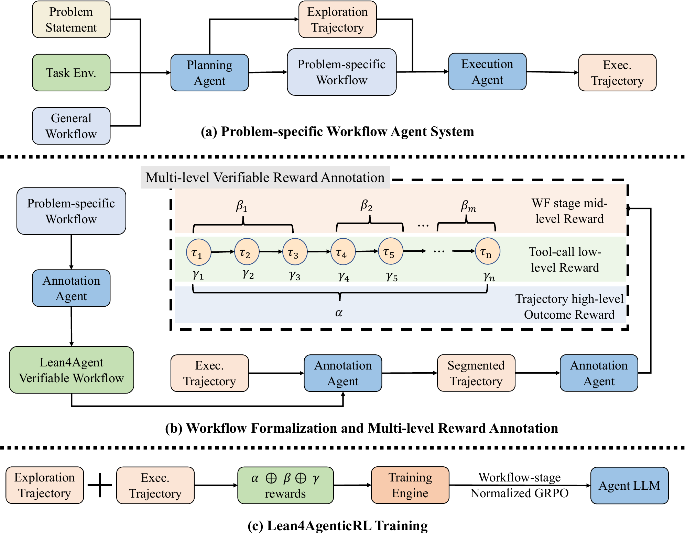

Abstract
Long-running software engineering and terminal tasks require agents to learn from both final outcomes and intermediate actions. Yet outcome rewards alone offer limited guidance about which steps help. We introduce Lean4AgenticRL, a framework that grounds multi-level process rewards in a unified Lean4 formalization schema for open-ended agentic reinforcement learning. It first builds a problem-specific workflow through exploration and planning. It then formalizes the workflow and annotates task outcomes, workflow-stage progress, and tool-call behavior. These signals support workflow-stage-normalized GRPO, which assigns credit across comparable stages of different rollouts. We train LAR-9B and LAR-27B, which lead the compared models of similar size across three benchmarks. LAR-27B achieves 84.2% on SWE-Bench-Verified and 77.3% on TerminalBench-2.1, demonstrating the potential of formal methods for more effective agentic RL.
Key Achievements
-
Improving
+7.7%
relative gain on TB-2.1 over the previous 30B-class SOTA
-
Ranking
1st
on TB-2.1 among 30B-class models[1]
-
Introducing
1st
framework to integrate formally grounded process rewards into open-ended agentic RL
[1] Benchmark reference: Vals AI · Terminal-Bench 2.1 leaderboard.
Methodology

Problem-specific workflows. A planning agent explores the task environment and specializes a general workflow into a problem-specific workflow(PSWF). An execution agent then conduct the task based on the PSWF. This plan-then-execute process balances the flexibility of open-ended agents with stage-wise guidance, while giving subsequent verification a clear structure for assessing the agent’s behavior.
Workflow formalization and multi-level rewards. We transform the PSWF into a Lean4Agent workflow and align the execution trajectory with its stages. Rewards capture three levels: final task outcomes (α), workflow-stage completion (β), and tool-call penalties (γ). Stage rewards combine Lean/Python checks with semantic judges, while tool-call penalties target repetition, no-ops, and reward hacking.
Workflow-stage-normalized GRPO. Different rollouts may take different numbers of steps to complete the same task. We align their workflow stages and normalize rewards within corresponding stages, instead of comparing unrelated tool calls by position. Combining these stage-aware advantages with outcome and tool-call signals provides more targeted credit assignment. Training with this objective produces LAR-9B and LAR-27B for software engineering and general terminal tasks.
BibTeX
@misc{wang2026lean4agenticrl,
title={{Lean4AgenticRL}: Advancing Agentic {RL} with Verifiable Multi-level Process Rewards},
author={Ruida Wang and Gerald Friedland and Tong Zhang and Chris Kong},
year={2026},
url={https://github.com/RickySkywalker/Lean4AgenticRL/blob/main/assets/paper.pdf},
note={Preprint},
}